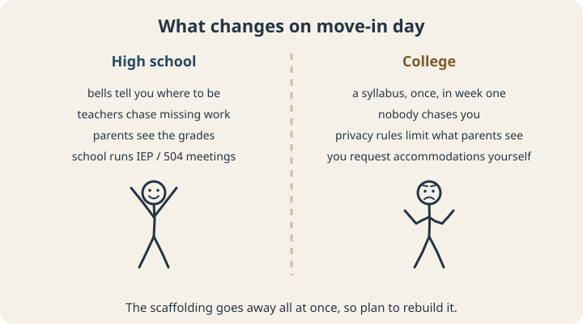
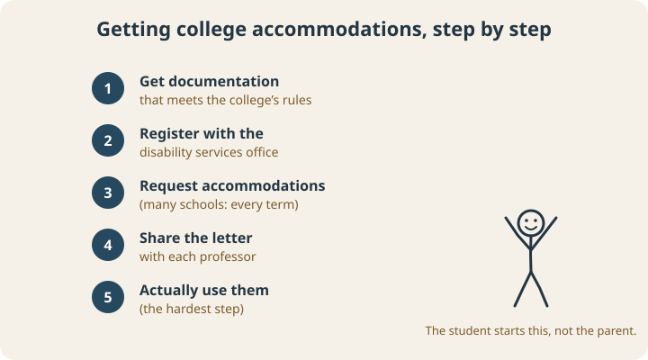

September 23, 2026
ADHD in College: What Students and Parents Should Know Before Day One

For a lot of students with ADHD, high school worked, sometimes just barely, because of structure they didn’t fully notice. Bells told them where to be. Teachers chased missing assignments. Parents saw grades and asked questions. An IEP or 504 plan put supports in place, and adults ran the meetings.
Then they move into a dorm, and most of that structure disappears in a single day.
This post is for students with ADHD heading to college and for the parents helping them get ready. It covers why the transition is hard, how accommodations work once high school supports end, what research says helps, and a plan for the first semester.
Why college is a big jump

College asks for exactly the skills ADHD makes hardest: managing unstructured time, keeping track of deadlines that were announced once in week one, starting long assignments early, and doing it all without anyone checking in. At the same time, federal privacy law generally gives college students, not their parents, control over their education records, so the parent safety net gets thinner too.
ADHD is common on campus. A review of the research estimated that roughly 2 to 8% of college students report clinically significant ADHD symptoms, and that at least a quarter of college students with disabilities have ADHD.1
The academic stakes are real. A study that followed college students for four years found that students with ADHD had lower grade point averages than their peers throughout college.2
The accommodation surprise
This catches many families off guard. The special education law that governs IEPs in K–12 schools doesn’t follow students to college. Colleges do have to provide reasonable accommodations for students with disabilities under civil rights law, but the process works differently, and the student has to start it.
According to guidance from the U.S. Department of Education’s Office for Civil Rights:3
- An IEP or 504 plan can help show what worked in high school, but it’s generally not enough documentation on its own for college.
- If your documentation doesn’t meet the college’s requirements, the school should tell you what’s needed.
- Neither the high school nor the college is required to pay for a new evaluation, so students may need to arrange and pay for one themselves.
Practical upshot: if an updated evaluation might be needed, look into it during junior or senior year of high school, not the week before classes start.

The usual process looks like this, though every college sets its own details:
- Get documentation that meets that college’s requirements. Check their disability services website for exactly what they accept.
- Register with the disability services office. Many offices recommend doing this before the first semester starts.
- Request accommodations, such as extended test time, a reduced-distraction testing room, or note-taking support. Many schools require a new request each term.
- Share the accommodation letter with each professor, usually early in the term.
- Actually use them. Lots of students register and then never book the extended-time test room. The accommodation only helps if it gets used.
What research says helps
The strongest evidence so far comes from a program called ACCESS, which combined group cognitive behavioral therapy with individual mentoring across two semesters. In a randomized trial with 250 college students with ADHD, students who got the program right away improved more than students waiting for it, in their knowledge of ADHD, their use of practical strategies, and their thinking habits. They also showed improvements in ADHD symptoms, executive functioning, and use of disability accommodations.4
ADHD coaching has also been studied mostly with college students. In one evaluation of 148 students, an 8-week coaching program was followed by improvements in study and learning strategies, self-esteem, and satisfaction with school.5 (More on the coaching research in What Is ADHD Coaching?)
The common thread is that students do better when they learn specific skills and have someone checking in regularly, which is exactly what high school used to supply without anyone calling it that.
A first-semester plan
Before move-in
- Sort out documentation and register with disability services.
- If the student takes ADHD medication, plan how prescriptions will be refilled at school.
- Agree, as a family, on what kind of check-ins the student actually wants. A short weekly call is easier to keep up than daily texts.
Week one
- Put every deadline from every syllabus into one calendar on the first weekend. All of them, through finals. (Our post on ADHD time management has more on building a system that holds.)
- Send accommodation letters to professors.
- Find the tutoring center, the writing center, and a couple of study spots that work.
Every week
- A 15-minute weekly review: what’s due in the next two weeks, and when will each piece get done?
- Fixed study blocks, ideally somewhere other than the dorm bed. Studying next to a friend helps many students (see body doubling).
- Protect sleep. It’s the first thing college takes away, and executive function depends on it.
For parents
Your role shifts from manager to consultant. Ask open questions (“What’s coming up this week?”) instead of checking grades, and help your student build their own system rather than running it for them. If things start sliding, the most useful move is usually helping them get support on campus or from a coach, since you’re no longer in the room.
The short version
College removes most of the structure that helped students with ADHD succeed in high school, and it hands the responsibility for accommodations to the student. Planning ahead for documentation, setting up a real system in the first week, and getting regular support, whether from a program, a coach, or disability services, makes a measurable difference.
If you want a clear picture of which executive skills to build supports around, the free Executive Skills Questionnaire is a good place to start, for students and parents alike.
Scope note: This article is educational and isn’t legal advice. Accommodation rules and processes vary by college, so check with your school’s disability services office.
Sources
- DuPaul, G. J., Weyandt, L. L., O’Dell, S. M., & Varejao, M. (2009). College students with ADHD: Current status and future directions. Journal of Attention Disorders, 13(3), 234–250. doi.org/10.1177/1087054709340650
- DuPaul, G. J., Gormley, M. J., Anastopoulos, A. D., Weyandt, L. L., Labban, J., Sass, A. J., Busch, C. Z., Franklin, M. K., & Postler, K. B. (2021). Academic trajectories of college students with and without ADHD: Predictors of four-year outcomes. Journal of Clinical Child & Adolescent Psychology, 50(6), 828–843. doi.org/10.1080/15374416.2020.1867990
- U.S. Department of Education, Office for Civil Rights. Students with disabilities preparing for postsecondary education: Know your rights and responsibilities. ed.gov
- Anastopoulos, A. D., Langberg, J. M., Eddy, L. D., Silvia, P. J., & Labban, J. D. (2021). A randomized controlled trial examining CBT for college students with ADHD. Journal of Consulting and Clinical Psychology, 89(1), 21–33. doi.org/10.1037/ccp0000553
- Prevatt, F., & Yelland, S. (2015). An empirical evaluation of ADHD coaching in college students. Journal of Attention Disorders, 19(8), 666–677. doi.org/10.1177/1087054713480036